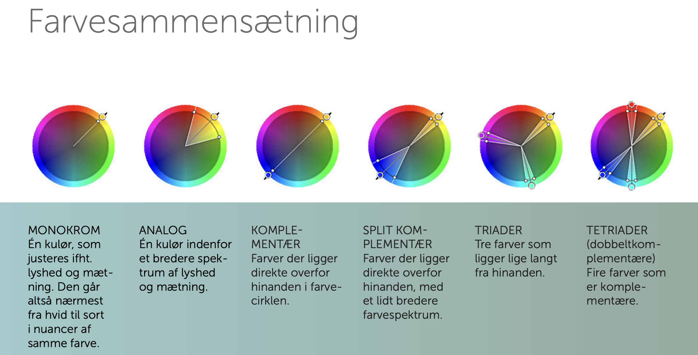
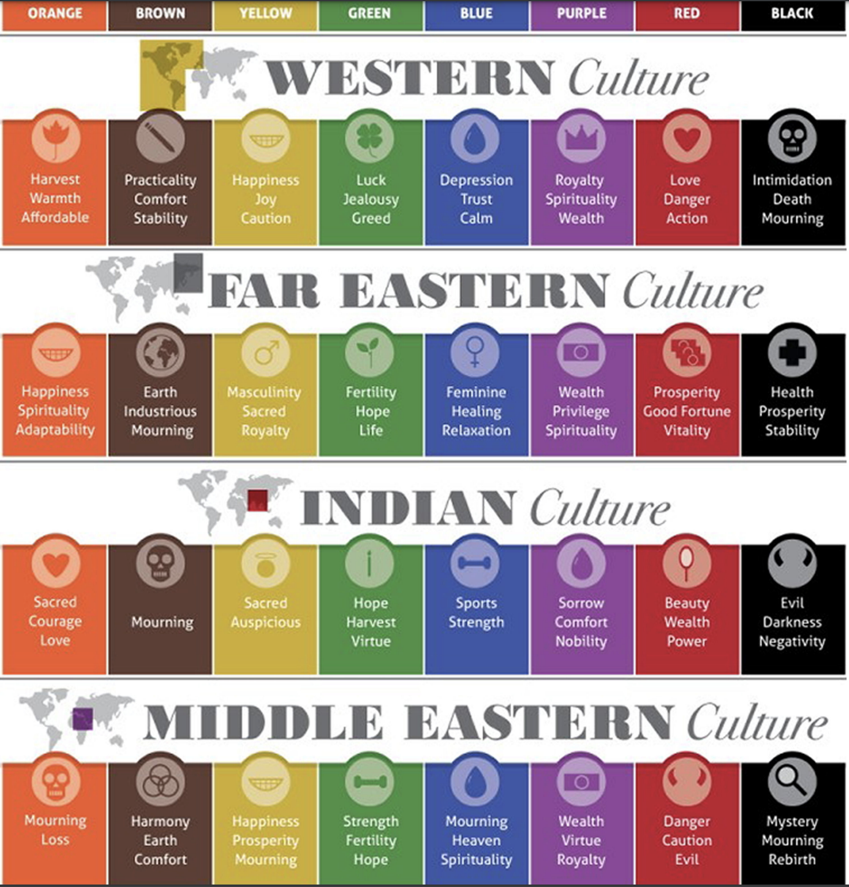

Gestaltlovene handler om at se helheder
Closure vil sige at vi ser noget i helhed, det kan godt være hele billedet ikke er synligt
men vores hjerne kan godt gennemskue hvad det egentlige billede er.
Common fate er hvis objekter er i samme retning, og derfor ligner at de høre sammen, og i de største sammenhænge gør.
Continuation er objekter der er arrangeret på linje eller kurver, som opfattes som relaterede i højere grad, end hvis de ikke er.
Simularity er visuelle elementer som er ens i form, størrelse, farve
og retning opfattes som del af en gruppe
Figrure Ground er det element som er intuitivt, så vel som synligt, separeret fra baggrunden.
Proximity er objekter som er tætte, opfattes (perception) som
værende relaterede, i højere grad end objekter som er placeret langt fra hinanden.
Symmetry er hvis noget er symetrisk og derfor opfattes til at høre sammen.
RGB / Red Green Blue Additivt farvesystem. Lys tilføjes. Benyttes på computer og tv-skærme.
CMYK / Cyan Magenta Yellow Key(Black) Subtraktivt farvesystem. Lys trækkes ud. Benyttes til tryksager.
Når man vælger farver til sin hjemmeside eller plakat, eller hvad man laver, så er det vigtigt at huske på
at farver betyder noget forskelligt hvor end man er henne i verden, som illustreret på billedet her under.
Samt betyder grå balance, neutralt og noget eksklusivt.
Fonte, kolonner, læsbarhed, layout, billeder, logoer osv, er altsammen noget der har med typografi at gøre.
"SERIF" har fået sit navn fra sine "fødder", den tynde linie som afslutter grundstregen på et bogstav
eller et symbol.
"SANS SERIF" er fransk og betyder "uden" - altså "uden serif".
Sans serif har længe været det foretrukkende
som brødtekst på moderne hjemmesider, da det er mere letlæselig.
Typeface er forskellige stile man kan vælge.
Fonte er forskellige varianter af en typeface som tykkelse på fonten eller størrelsen.
Størrelsen kan være ultratynd, tynd, let, normal, medium, tyk, tung, helt tyk og ekstra tyk.